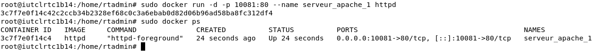
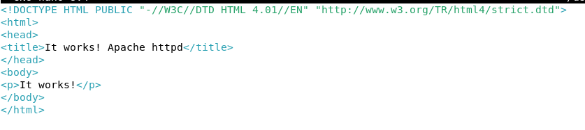
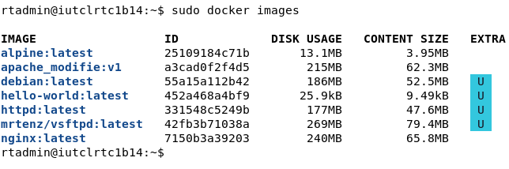

Conteneurisation Docker.
Virtualisation Légère / Micro-services / DevOps1. Contexte du Projet
Dans le cadre du module Administration Système, j'ai exploré le concept de conteneurisation via Docker sur une distribution Linux Debian. Contrairement à la virtualisation classique, Docker permet d'isoler des applications dans des environnements légers, partageant le même noyau système.
Ma mission était d'apprendre à gérer le cycle de vie complet des conteneurs : de l'installation du moteur à la création d'images personnalisées et à la gestion des réseaux isolés.
2. Travail Fourni
A. Déploiement & Mapping de Ports
J'ai déployé mon premier service web en utilisant l'image officielle httpd (Apache). L'enjeu majeur était de comprendre le mapping de ports : j'ai redirigé le port 8080 de ma machine hôte vers le port 80 du conteneur. Cela m'a permis d'accéder à mon serveur web via localhost:8080 tout en gardant le conteneur isolé.

Lancement du conteneur Apache
B. Persistance & Customisation
Pour personnaliser mon service, j'ai modifié le contenu du serveur directement en session interactive. Pour ne pas perdre ces changements, j'ai utilisé la commande docker commit afin de créer une nouvelle image "snapshot". J'ai également appris à exporter ces travaux dans des archives .tar via docker save pour permettre une portabilité totale de l'environnement.

Création d'une image modifiée
C. Administration Réseau Docker
J'ai approfondi la gestion réseau en créant mes propres Bridges (ponts virtuels). J'ai configuré des réseaux isolés pour permettre à plusieurs conteneurs de communiquer entre eux via leurs noms d'hôtes internes, tout en étant protégés du réseau extérieur.
# Création d'un réseau bridge personnalisé
$ sudo docker network create --driver bridge mon_reseau_prive
# Inspection de la topologie IP
$ sudo docker network inspect mon_reseau_prive
3. Difficultés Rencontrées
La principale difficulté a été de comprendre la nature éphémère des conteneurs. Au début, j'ai perdu des données en supprimant un conteneur sans avoir créé de volume ou fait de commit. J'ai aussi dû apprendre à gérer les conflits de ports sur la machine hôte et à diagnostiquer les problèmes de connectivité DNS entre conteneurs d'un même réseau.
4. Résultat Final
Je maîtrise désormais les fondamentaux de la conteneurisation. Je suis capable de transformer n'importe quelle application en une image Docker prête à être déployée sur n'importe quel serveur Linux. C'est une compétence cruciale qui complète mon profil d'administrateur système tourné vers le Cloud et le DevOps.

État des conteneurs actifs en production